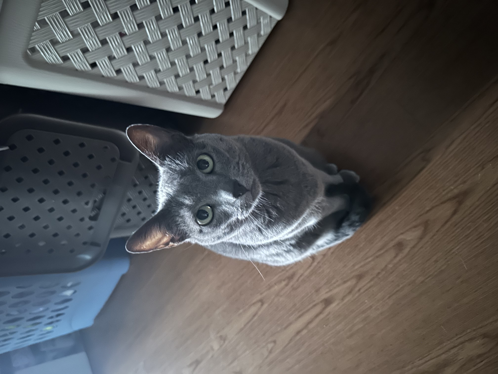

Hi, I’m Kayla Lee.
KyungA (Kayla) Lee, Ph.D.
Postdoctoral Fellow, Linguistics, Cornell University
Visiting Scholar, iSchool, Syracuse University
I study speech rhythm and prosody, how people learn to hear and speak a second language, and how people talk to and about AI voices.

Rhythm and prosody
Teaching and measuring English rhythm for syllable timed learners.
Child L2 speech
Phonetic training and speech technology for young EFL learners.
Human–AI communication
How accent and voice shape the way people relate to AI.
About
A researcher, a former classroom teacher, and a cat person.
I am a postdoctoral fellow in the Cornell Phonetics Lab, working with Dr. Sam Tilsen on speech rhythm and phonetics. I am also a visiting scholar at the Syracuse University iSchool, hosted by Dr. Jaime Banks, working on social AI and human–technology interaction.
Before research, I taught elementary school in South Korea for eight years. I then earned my M.A. and Ph.D. in English Language Education at Seoul National University. That classroom experience still shapes my questions about learning and technology.
I speak Korean and English, and I enjoy building tools for pronunciation research and teaching.

Research
Four threads that connect my work.
Speech rhythm and prosody
How syllable timed learners acquire stress timed English rhythm, and how to measure and train it.
L2 and child speech
Perceptual confusions, high variability phonetic training, and working memory in young learners.
Technology enhanced TESOL
Speech recognition, pronunciation apps, and AI assisted language learning in classrooms.
AI voices and ideology
Accent, nativeness, and voice in human–AI communication.
Dissertation (Seoul National University, 2025)
Mobile assisted high variability phonetic training and ASR based articulation practice for EFL children: effects on L2 perception, production, phonological working memory, and learner experience.
Publications
Selected work. Full list available on request.
Journal articles and proceedings
-
Lee, K. & Ahn, H. Blended phonetic training with HVPT features for EFL children.Languages, 10(6), 122 · DOI Scopus2025
-
Lee, K. & Ahn, H. Effects of perception focused high variability phonetic training in elementary EFL learners.Proceedings of PSLLT 15 · DOI2025
-
Lee, K. EFL learners’ perceptual confusions and phonemic awareness of English fricatives.Phonetics and Speech Sciences, 15(3) · DOI2023
-
Choe, S., Lee, K., & So, Y. Phonemic awareness instruction and L2 listening comprehension: A meta analysis.Journal of Asia TEFL, 17(4) · DOI Scopus2020
Under review
-
Lee, K. & Ahn, H. Mobile assisted vowel training for Korean EFL children’s perception and production.Language Learning & Technology2026
-
Tang, Q., Wang, J., & Lee, K. Relational turbulence with a layered partner: Human–AI companionship.Extended abstract, ICA 20272027
In preparation
- Text to speech accent mismatch and L2 learners’ intelligibility and comprehensibility2026
- How adults and children talk about conversational AI: YouTube discourse analysis2026
- Who counts as a “native speaker” of English?2026
- Envelope based rhythm measures of a prosody training program2026
- English fricative confusions in Korean elementary learners: A one year longitudinal study2026
Talks
Selected conference presentations and invited talks.
-
Teaching English rhythm to syllable timed learners UpcomingAAAL 2027, Atlanta, GAMar 2027
-
English fricative perception: A one year longitudinal study (poster)PSLLT 2026, Ames, IASep 2026
-
Prosody focused intervention with Korean elementary EFL learners (invited lab talk)Cornell Phonetics Lab, Ithaca, NYFeb 2026
-
Mobile assisted HVPT for EFL children (invited online talk)CATESOL, Eureka, CAMar 2026
-
Mobile assisted HVPT for EFL childrenPSLLT 2025, Montréal, CanadaOct 2025
-
When phonetics meets AI (guest lecture)Korea National University of TransportationDec 2025
-
Speaking and discussion facilitation (guest teaching)Korean Language Institute, Harvard UniversityFeb 2025
Teaching
University courses and eight years in elementary classrooms.
-
English Grammar 4.76 / 5.0Instructor · Seowon UniversitySpring 2026
-
English Phonetics and Phonology 4.6 / 5.0Instructor · Seowon UniversityFall 2025
-
AI assisted Language LearningTeaching Assistant · Seoul National UniversitySpring 2024
-
Elementary school teacherWangnam and Namsuwon Elementary Schools, South Korea · 8 years in K–12 overall2019–2026
CV
Positions, education, and highlights.
Positions
Education
Selected honors
- Postdoctoral Travel Grant, Cornell University2026
- AIED-CON AI Integrated Teaching Tools Competition Award, Seoul National University2024
- Outstanding Teacher Award, Suwon Mayor’s Commendation2021
Service
Skills
Contact
Collaborations, invitations, and questions are welcome.
Let’s talk about speech, rhythm, and AI.
The best way to reach me is by email.
B14 Morrill Hall, Department of Linguistics, Cornell University, Ithaca, NY 14853